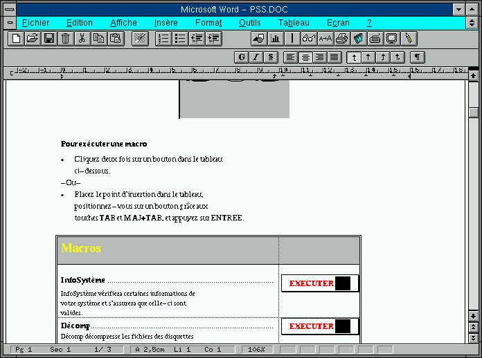
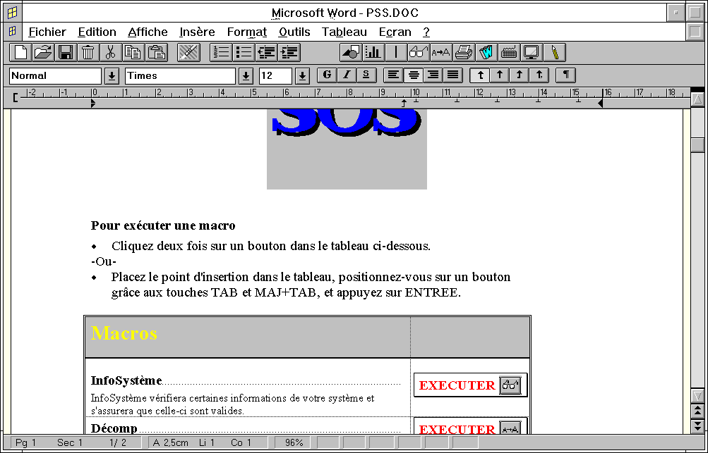

Emulation Windows sous LINUX
Article pour l'Echo de Linux (Juillet 1996)
Eric Dumas (dumas@freenix.fr)Si Linux est tout à fait opérationnel, il ne possède pas le même éventail d'applicatifs existant dans le monde Windows (bien que de nombreuses applications soient en cours de développement comme SciText...). Il est toutefois toujours désagréable d'avoir à réamorcer sa machine pour lancer un jeu, un tableur ou un traitement de texte sous Windows.
C'est pour cette raison que des émulateurs sont en cours de développement. Cet article va présenter deux émulateurs, leurs possibilités, leur état d'avancement et ce qu'il est possible de faire avec. Un exemple d'utilisation avec winword2.0 sera également donné. Le premier est domaine public, Wine (qui signifie vin en anglais... d'où le logo !), et le second est commercial Wabi.
Wine signifie
Wine est actuellement en version de développement et il est développé sous Linux, mais il est testé également sous NetBSD et FreeBSD. La version testée est la 960717. Ce projet est actuellement sous la direction d'Alexandre Julliard (julliard@lrc.epfl.ch).
Le début de Wine a été difficile mais il fait des progrès extraordinaires depuis quelques temps. Etant donné que Wine est développé par des volontaires, il est difficile de dire quand il sera parfaitement au point. Entre 90 et 98% des fonctions de l'API windows et entre 80 et 90 % des fonctions utilisées par les programmes ont été implémentées. Toutefois, la difficulté réside bien souvent dans l'implémentation des fonctions non documentées dont Microsoft nous abreuve depuis trop longtemps.
Wine possède l'avantage de gérer à la fois du code 16 bits que du 32 bits Windows. Il peut (pourra !) donc exécuter des applications Windows 3.1 mais également 95 et NT. Enfin, il gère aussi bien les displays en 256 couleurs que supérieur.
Toutefois, il possède encore de nombreux bugs (par exemple la gestion des polices de caractères car Wine utilise les polices X et pas les polices True Type).
Wabi est initialement un produit conçu par SunSoft Inc. Caldera a effectué le portage de Wabi pour Linux. Il s'agit exactement du même produit que l'on peut trouver sur Solaris.
La version testée est la béta 2.20. Wabi est opérationnel avec certaines applications dont voici la liste :
CorelDRAW! 3.0, 4.0 Harvard Graphics 2.0, 3.0 Lotus 1-2-3 4.0, 5.0 Lotus Ami Pro 3.1 Lotus Approach 2.1, 3.02 Lotus cc:Mail client 2.03, 2.2 Lotus Freelance Graphics 2.01, 2.1 Lotus Notes client 3.0c, 3.3 Lotus Organizer 2.01, 2.1 Lotus SmartSuite 3.1, 4.0 Lotus Word Pro 96 Microsoft Access 2.0 Microsoft Excel 4.0, 5.0 Microsoft Mail client 3.2 Microsoft Office 4.3 Microsoft PowerPoint 3.0, 4.0 Microsoft Project 3.0, 4.0 Microsoft Word 2.0, 6.0 PageMaker 4.0, 5.0 Paradox 4.5, 5.0 Procomm PLUS 1.02, 2.11 Quattro Pro 5.0, 6.0 Quicken 3.0, 4.0, Deluxe 4.0 WordPerfect 6.0a, 6.1 Microsoft Windows 3.1, 3.11 Microsoft Windows for Workgroups 3.11
La qualité ainsi que les performances du produit sont impressionantes, toutefois elle souffre du fait d'être uniquement 16 bit (adieu 95 et NT), et ne fonctionne pas en plus de 256 couleurs (display 8 bits) !
Wabi devrait être disponible vers la fin du mois de Juillet à un prix inférieur à 200 $.
Bien... après ces présentations, voici deux exemples d'utilisations. J'ai lancé Word et j'ai chargé un fichier quelconque (les copies d'écran ont été effectuées avec... xv :-)).
Avec Wine, on peut remarquer que certaines bitmaps n'apparaîssent pas, la gestion des polices pose encore problème, ainsi que certaines couleurs :

Avec Wabi (les traînées noires viennent d'un bug du serveur X) :

Du côté de la puissance de la machine, inutile de dire qu'il est nécessaire d'avoir une machine solide pour faire tourner ces émulateurs. 24 Mo sont apréciés pour pouvoir ouvrir quelques documents et pouvoir travailler.
Si le Wabi Caldera a effectivement une longueur d'avance sur Wine dans le sens où il est opérationnel avec un certain nombre d'applications (au moins parcequ'ils profitent du travail effectué pour la version Solaris), Wine semble être toutefois particulièrement bien placé à long terme, notemment grâce à ses possibilités 32 bits et sa meilleure gestion des displays X. Certes, ce dernier est encore en développement et de nombreux problèmes subsistent, mais le résultat reste impressionnant (ne pas oublier que les gens qui travaillent dessus le font bénévolement).
A l'heure actuelle, on peut toutefois considérer que Wine n'est pas encore utilisable dans des conditions réelles car ses nombreux bugs ainsi que quelques manques l'handicapent dans l'utilisation de tous les jours. Toutefois, on peut espérer que d'ici une période raisonable, Wine devienne opérationnel.
Vous trouverez ci-dessous tout un tas de références concernant Wine et Wabi.